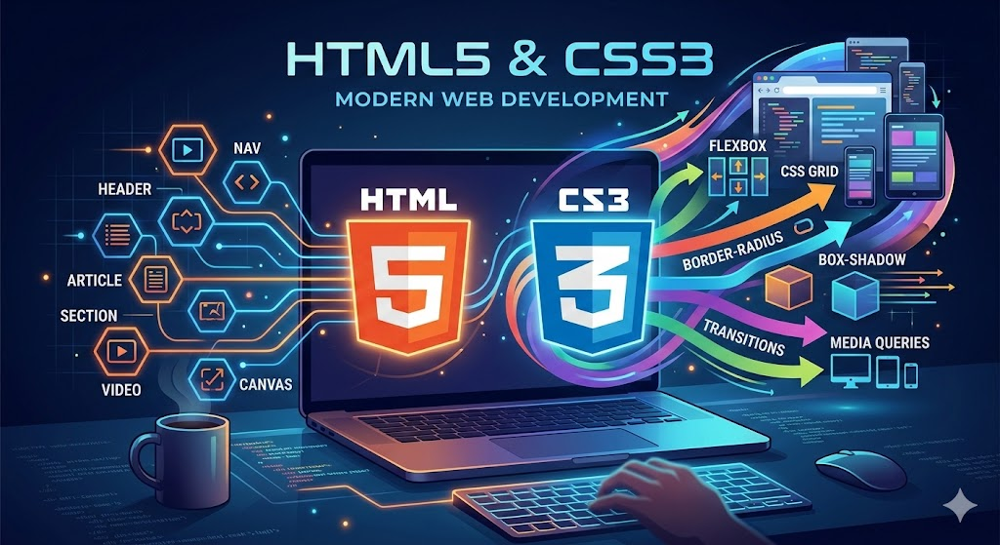
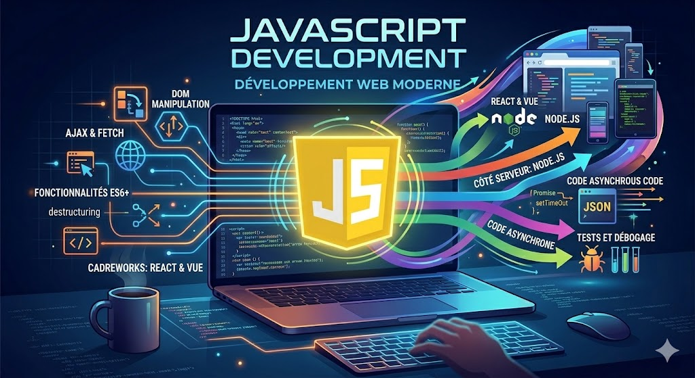
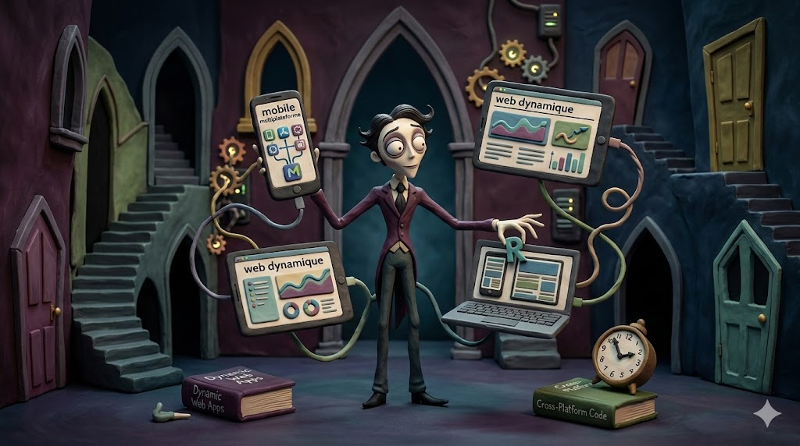
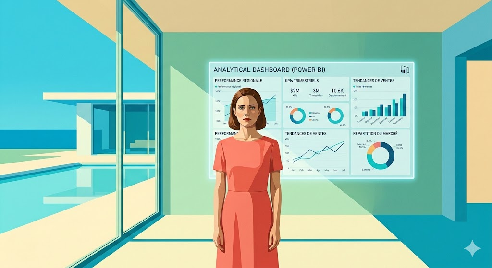
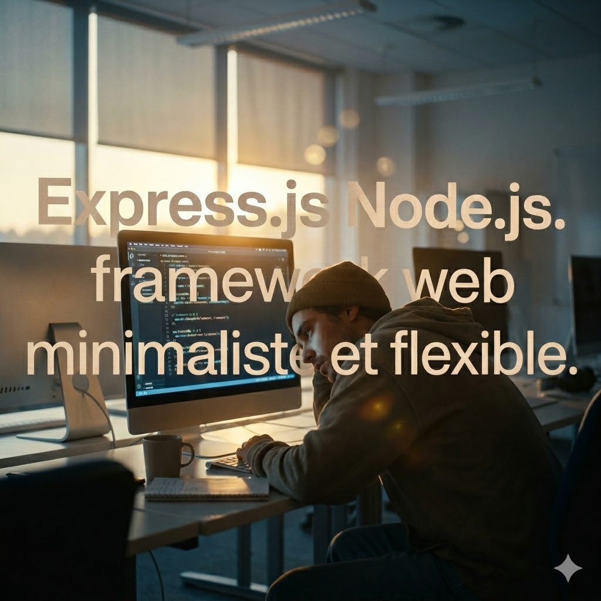
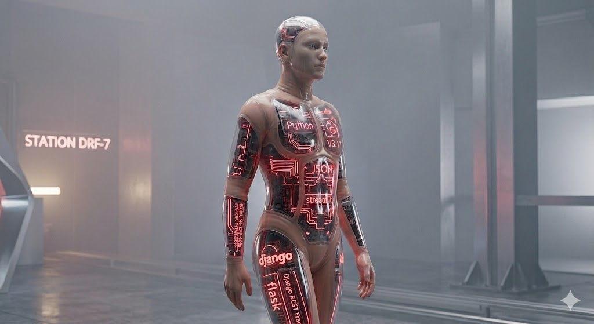
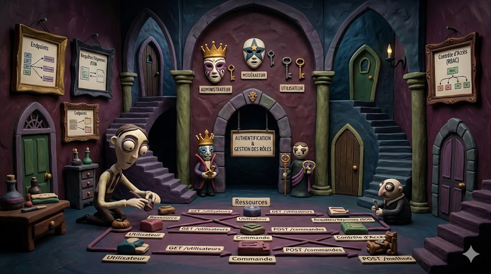
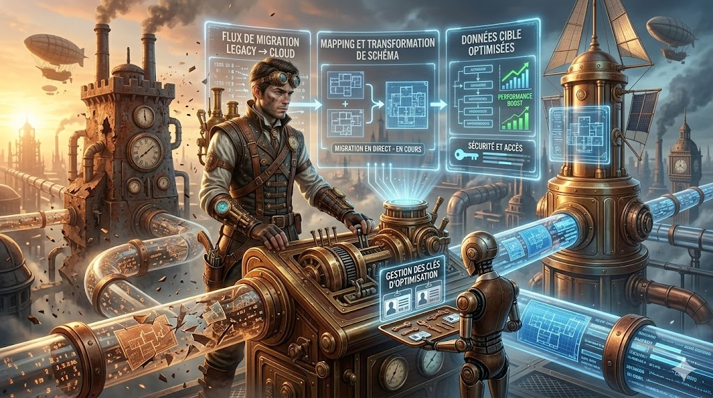
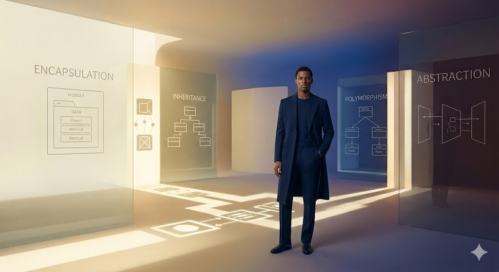
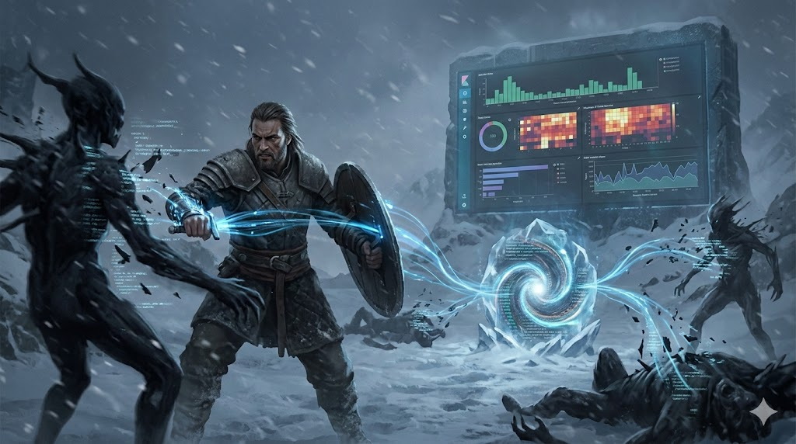

Bienvenue sur mon portfolio
Je suis Bodian Arphan Kaback Junior, développeur Fullstack et Ingénieur Cybersécurité basé à Keur Massar, Dakar.
Passionné par la conception de solutions numériques performantes, je développe des applications modernes, sécurisées et évolutives, en combinant expérience utilisateur, architecture backend robuste et bonnes pratiques de cybersécurité.
Mon objectif : transformer des idées en produits numériques fiables, sécurisés et performants.
Développement Fullstack
Compétences Frontend

HTML5 / CSS3

JavaScript (ES6+), React.js, Tailwind CSS

React Native, Flutter, Expo Go

Applications web dynamiques, mobiles multiplateformes, interfaces responsives

Dashboards analytiques (Power BI)
Compétences Backend

Node.js / Express

Python / Django REST Framework
MySQL, Oracle, Firebase (authentification & temps réel)

Conception d'API REST, authentification & gestion des rôles

Migration et optimisation de base de données

Programmation orientée objet (POO)
Data & Analyse
- Python (Pandas, NumPy, Matplotlib, Seaborn)
- Power BI
- Visualisation et traitement de données
Cybersécurité & DevSecOps
Incident Response & Forensic
- Investigation de sécurité et analyse forensic (compromission système et réseau)
- Détection de ralentissements réseau, connexions suspectes, enquête forensic complète
- Identification de l’origine de l’attaque, actions réalisées, impact sur le système
Architecture de détection & d’analyse
IDS réseau : Snort (CSI Linux)

SIEM : ELK Stack (Elasticsearch, Logstash, Kibana)
Forensic réseau : Wireshark
Forensic disque : Autopsy
- Environnement technique : Thonny, ESP32, phase de détection, centralisation & corrélation
Détection & Analyse de l’attaque
- Détection IDS (Snort) : scan réseau, tentatives SSH, alertes horodatées
- Centralisation & Corrélation (ELK) : logs Snort vers ELK, analyse Kibana, identification IP attaquante
- Analyse réseau avancée (Wireshark) : analyse PCAP, reconstruction flux TCP, confirmation connexion SSH
- Analyse forensic disque (Autopsy) : analyse image disque, création fichiers malveillants, exécution scripts, traces attaquant
Corrélation & Reconstitution de l’attaque
- Corrélation des preuves : réseau (Snort, Wireshark), logs centralisés (ELK), système (Autopsy)
- Reconstitution complète de la chaîne d’attaque
- Production de preuves exploitables en contexte académique et professionnel
Recommandations de sécurité
- Renforcement de l’authentification SSH
- Segmentation du réseau
- Durcissement des règles Snort
- Surveillance continue
- Renforcement des politiques de journalisation